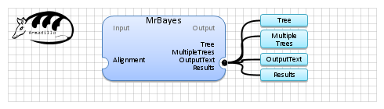

| Name | MrBayes | |
| View |  | |
| Publication(s) | MrBayes 3: Bayesian phylogenetic inference under mixed models.
Ronquist F, Huelsenbeck JP.
Bioinformatics. 2003 Aug 12;19(12):1572-4.
Altekar, G., S. Dwarkadas, J. P. Huelsenbeck, and F. Ronquist. 2004. Parallel Metropolis-coupled Markov chain Monte Carlo for Bayesian phylogenetic inference. Bioinformatics 20:407-415. | |
| Website | http://molecularevolution.org/software/phylogenetics/mrbayes | |
| Description | Infer a phylogenetic tree using Bayesian methods.
(Ronquist and Huelsenbeck 2003) | |
| Input (1) |
Alignment | |
| Output (4) |
MultipleTrees Tree Results OutputText | |
| Keywords (1) | Tree, Phylogenetic inference, Bayesian method | |
| Related (2) | Garli PROTML (Phylip) | |
| Sample workflow | mrbayes.properties.db |